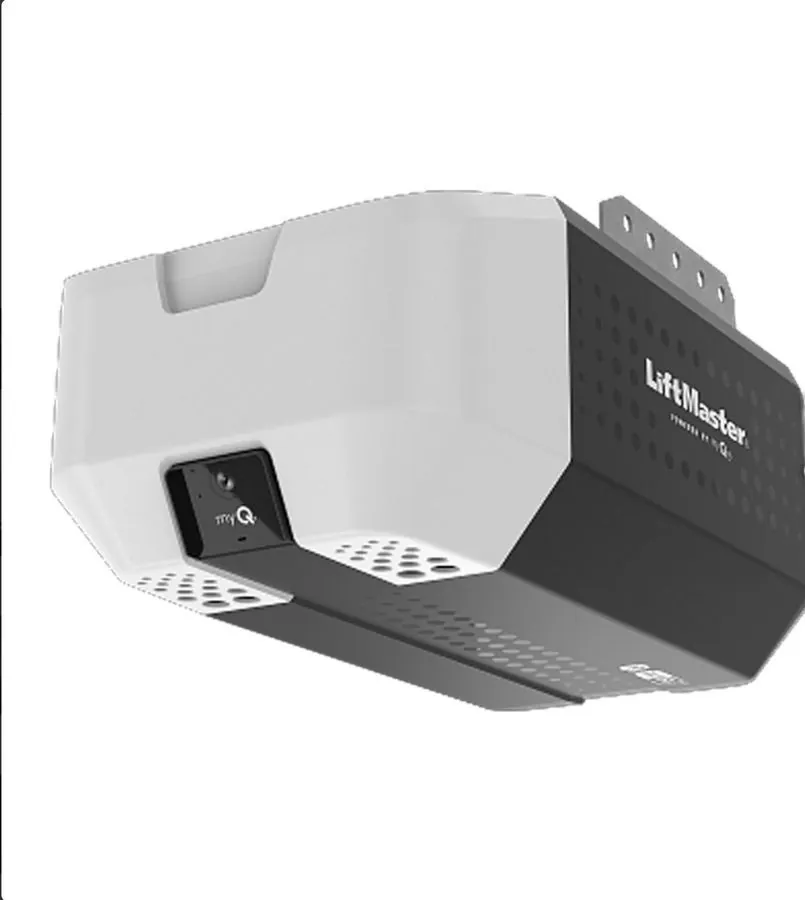

Smart HomeThe Complete Guide to Garage Door Openers for Austin Homeowners
Chain, belt, wall-mount, or smart? We break down every opener type and major brand, why we trust LiftMaster, and what Austin heat and power outages mean for your choice.
Read Full Article